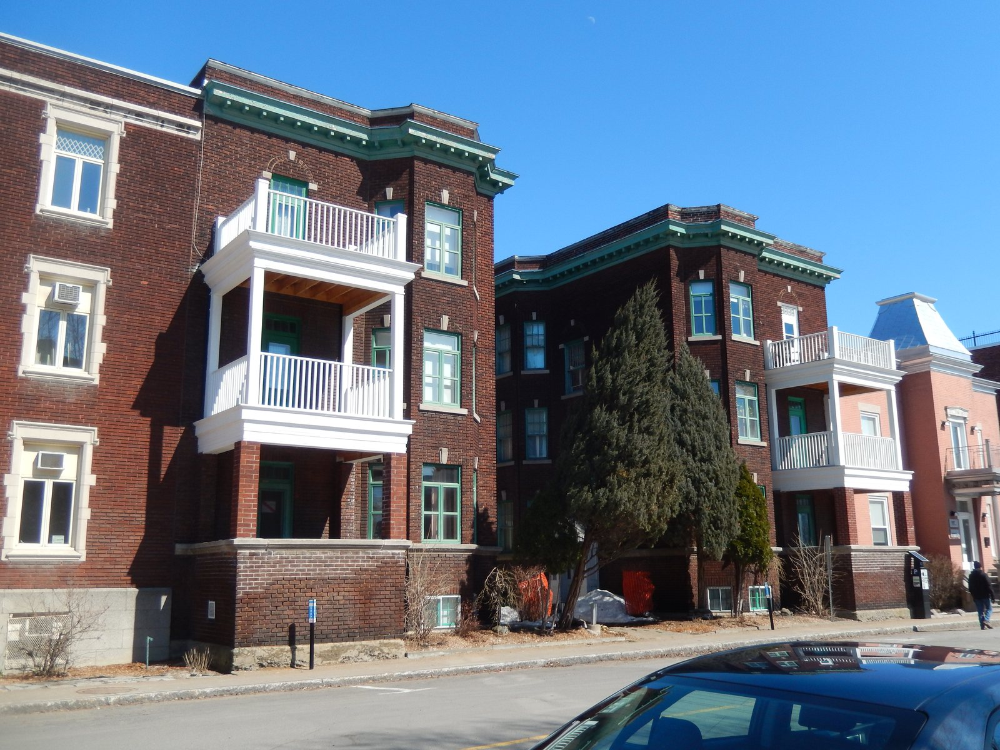

The 1908 reconstruction block — brick, flat-roofed, built all at once Le bâti de la reconstruction d'après l'incendie de 1908

Appartements Laviolette, in the site patrimonial de Trois-Rivières (March 2020) — a three-storey residential building of 1918 that replaced a construction the 1908 fire had probably destroyed. © Fralambert, Wikimedia Commons, CC BY-SA 4.0 — https://commons.wikimedia.org/wiki/File:Appartements_Laviolette_01.jpg
A quarter rebuilt in four years by, as the City puts it, a handful of architects and contractors — and the evenness that produced is the heritage claim, not a side effect of it. Brick, flat roofs, two to four storeys in continuous rows, ornament gathered into parapets, cornices on consoles, keystones, lintels and brick banding. The fire took the commercial centre and largely spared the old core, so this fabric surrounds the declared site rather than filling it; but the site's widened streets, its public space on the burnt parish church's ground, and thirteen of its forty-five buildings belong to the same four years.
The fire of 22 June 1908 began in a hay store, pushed back the city's eight firefighters within a quarter of an hour, and brought help from Shawinigan, Grand-Mère, Québec and Montréal. How much it destroyed is genuinely contested and the figures are set out with their attributions in the notes on the place page — the City says "près de 800 bâtiments", its own Patri-Arch study says "environ 200 bâtiments", Radio-Canada says a quarter of the city and no casualties, and the UQTR account reconciles the two counts as buildings-including-sheds against residences. What is not contested is the speed and the singleness of the rebuilding, and its material — a city still largely of wood in 1900 was 55 % brick-housed by 1931.
| Tenure / plan | mixed |
|---|---|
| Storeys | 2–3 |
| Roof form | flat |
| Roof pitch | – |
| Window proportion | vertical |
| Principal cladding | clay-brick |
| Roofing | tar-and-membrane flat roof |
| Garage | none |
| Lot width | – |
| Front setback | – |
| Side setback | – |
| Front yard green | – |
What Ville de Trois-Rivières says about this type
- En 1912, quatre ans après le grand incendie, le centre-ville de Trois-Rivières est à nouveau animé. Rebâti par une poignée d'architectes et d'entrepreneurs, le quartier présente une grande homogénéité architecturale qui se constate encore aujourd'hui. Avec la reconstruction, les rues du centre-ville sont élargies, voire redessinées et on assiste à l'agrandissement de la ville à l'ouest et au nord.
- Dans la partie sud-ouest, quelques rues plus larges témoignent du réaménagement qui a suivi le grand incendie de 1908.
- Par ailleurs, le site patrimonial semble peu affecté par l'incendie de 1908, mais il est modifié par le développement de la ville qui s'ensuit. De fait, 13 bâtiments, soit près de 30 % des édifices du site patrimonial, sont érigés entre 1908 et 1925. L'un d'entre eux, les Appartements Laviolette, est un immeuble résidentiel de trois étages bâti en 1918 en remplacement d'une construction vraisemblablement détruite par les flammes en 1908.
- The rebuilt quarter occupies the ground between the river and rues Bonaventure, Champlain and Saint-Georges, where the fire of 22 June 1908 stopped.
- Streets were widened and in places redrawn as part of the reconstruction; inside the declared site the widths of rues des Casernes and des Ursulines and the public space on the site of the destroyed parish church are listed by the RPCQ as characteristic elements produced by the post-fire works.
- The RPCQ notes that in the south-west of the declared site "quelques rues plus larges témoignent du réaménagement qui a suivi le grand incendie de 1908"; the former couvent des Filles de Jésus is set back from the roadway for the same reason.
- Continuous street frontage, the buildings taking the full width of their lots.
- Two to three storeys, occasionally four, under a flat roof.
- Rows built as rows, by a small number of hands, within four years — the source of the quarter's evenness.
- Inside the declared site, 13 buildings — close to 30 % of it — went up between 1908 and 1925, among them the three-storey Appartements Laviolette of 1918, put up in place of a building the flames had probably taken.
- Parapets and cornices on consoles; keystones, sills and lintels at the openings; brick patterning and banding.
- The Plan de conservation lists exactly these as the marks of the brick urban houses and immeubles à logements built at the turn of the twentieth century in the declared site.
- Some of the rebuilt houses are Second Empire — the City's fiche captions the imposing house at 186-190 rue Bonaventure, with its turret, carved lintels and worked cornice, as built after the great fire of 1908.
- The City's Maison à mansarde fiche makes the same point for the modest register, noting mansard houses built after the 1908 fire alongside the 1870-1900 majority.
- Les maisons urbaines et les immeubles à logements multiples recouverts de briques construits au tournant du XXe siècle se distinguent par des éléments architecturaux tels que des parapets, des corniches à consoles, des clefs, des appuis et des linteaux aux ouvertures, des jeux de briques ainsi que des bandeaux.
- Cette imposante résidence a été construite après le grand feu de 1908. Sa tourelle, ses linteaux sculptés au-dessus des ouvertures et sa corniche ouvragée sont typiques du courant Second Empire.
- Symmetrical arrangement of openings, wood doors usually at the centre of the façade, many with a glazed transom.
- Casement windows with panes and sash windows are the two commonest types, with moulded wood chambranles and sometimes shutters or louvred blinds.
- Bay windows at ground level on some turn-of-the-century houses; oriels on several of the immeubles à logements.
- La plupart des bâtiments résidentiels et institutionnels se caractérisent par des ouvertures disposées de façon symétrique… les types de fenêtres les plus communs sont les fenêtres à battants à carreaux et les fenêtres à guillotine. Ces fenêtres sont munies de chambranles moulurés en bois et, parfois, de contrevents ou de persiennes. Quelques maisons construites au tournant du XXe siècle ont des fenêtres en saillie au rez-de-chaussée, tandis que plusieurs immeubles à logements sont dotés d'oriels.
- Brick, decisively. Of the 45 buildings in the declared site, 28 are brick-clad and 18 of those postdate 1908.
- Across the city the shift is measurable — a built stock still mostly of wood at the start of the twentieth century was 55 % brick-housed by 1931, in part through the post-fire construction.
- Des 45 bâtiments qui se trouvent dans le site patrimonial de Trois-Rivières, 28 ont un parement de brique, ce qui correspond approximativement à 62 % du nombre total de bâtiments du site patrimonial… L'analyse de la date de construction des immeubles ayant un parement de brique révèle que 18 d'entre eux ont été construits après 1908, date correspondant à l'incendie majeur qui a détruit une partie de la ville de Trois-Rivières.
- les éléments issus de travaux réalisés à la suite de l'incendie de 1908, dont la largeur des rues des Casernes et des Ursulines ainsi que l'espace public aménagé à l'emplacement de l'ancienne église paroissiale
There is no municipal fiche for this type — the City catalogues courants, not moments, and the reconstruction cuts across several of them. The record is therefore assembled from the reconstruction passages of the four sources actually held, and every column names which. The research memo behind this record quoted a 2005 Commission des biens culturels characterisation for the massing ("Des rangées continues de bâtiments de trois ou quatre étages…"); that study is cited in the RPCQ bibliography but no copy could be reached, so it is NOT quoted here and the massing is given from the Plan de conservation's own counts instead. Note also that this type sits mostly OUTSIDE the declared site — the fire took the commercial centre, and the ministry finds the declared site "peu affecté" — but SP-TR is listed in its sectors because the declared site's south-western streets, its street widths and thirteen of its buildings are products of the reconstruction.
Same word elsewhere
- –
Same form elsewhere
Same period elsewhere
- Family A company houses (models A1–A8) (Arvida (borough of Jonquière, Saguenay))
- Family B company houses (models B1–B4) (Arvida (borough of Jonquière, Saguenay))
- Family C company houses (models C1–C6) (Arvida (borough of Jonquière, Saguenay))
- Family D company houses (models D1–D5) (Arvida (borough of Jonquière, Saguenay))
- Mixed-use building with a flat roof (édifice mixte à toit plat) (Gatineau)
- Side-gable duplex (duplex à mur pignon latéral) (Gatineau)
- Central-gable house (maison à pignon central) (Gatineau)
- Complex gabled-roof house (maison à toit complexe à pignon) (Gatineau)
- Mansard-roofed house with gable wall on the façade (maison à toit mansardé avec mur pignon en façade) (Gatineau)
- One-and-a-half-storey wooden matchstick house (maison allumette en bois d'un étage et demi) (Gatineau)
- Wood matchstick house of two to two and a half storeys (maison allumette en bois de deux à deux étages et demi) (Gatineau)
- Brick matchbox house, two to two and a half storeys (maison allumette en brique de deux à deux étages et demi) (Gatineau)
- Cubic house (maison cubique) (Gatineau)
- CIP executive's house (maison de cadre de la CIP) (Gatineau)
- Flat-roofed wood house (maison en bois à toit plat) (Gatineau)
- Flat-roofed brick house (maison en brique à toit plat) (Gatineau)
- L-plan house with a two-slope (gable) roof (maison avec plan en L à toit à deux versants) (Gatineau)
- English-revival stone house (Hampstead)
- Second Empire house (Lévis)
- Victorian house (Lévis)
- American vernacular house (Lévis)
- Beaux-Arts house (Lévis)
- Boomtown house (Lévis)
- Cubic house (maison cubique) (Lévis)
- Flat-roofed house (Lévis)
- Arts & Crafts house (Arts & métiers) (Lévis)
- Garden City House (Town of Mount Royal)
- Faubourg House (Town of Mount Royal)
- Faubourg Apartment Block (Town of Mount Royal)
- Semi-detached single-family house (Outremont (borough of Montréal))
- Semi-detached duplex (Outremont (borough of Montréal))
- Detached single-family house (Outremont (borough of Montréal))
- Opulent detached residence (Outremont (borough of Montréal))
- Duplex without front setback (Le Plateau-Mont-Royal (borough of Montréal))
- Duplex with front setback (Le Plateau-Mont-Royal (borough of Montréal))
- Duplex with exterior stair (Le Plateau-Mont-Royal (borough of Montréal))
- Triplex with interior stair (Le Plateau-Mont-Royal (borough of Montréal))
- Triplex with exterior stair (Le Plateau-Mont-Royal (borough of Montréal))
- Multiplex (Le Plateau-Mont-Royal (borough of Montréal))
- Row urban house (Le Plateau-Mont-Royal (borough of Montréal))
- Apartment block without courtyard (Le Plateau-Mont-Royal (borough of Montréal))
- Apartment block with courtyard (Le Plateau-Mont-Royal (borough of Montréal))
- Small apartment building (Le Plateau-Mont-Royal (borough of Montréal))
- Mansard-roofed house of Second Empire influence (Saint-Lambert)
- Queen Anne style house (Saint-Lambert)
- Boomtown house with false mansard (Saint-Lambert)
- Boomtown house with crown (parapet or cornice) (Saint-Lambert)
- Cubic (Four Square) house (Saint-Lambert)
- House of Arts and Crafts influence (Saint-Lambert)
- Multi-dwelling building of plex type (Saint-Lambert)
- The "King Cottage" (Saint-Lambert)
- Lower-town company house (Ross and Macdonald, 1918–1923) (Témiscaming)
- Upper-district company house (Somerville, 1925–1950) (Témiscaming)
- Greystone row house (Westmount)
- Greystone triplex with exterior stair (Westmount)
- Mansard-roofed house of Second Empire influence (Westmount)
- Queen Anne house (Westmount)
- Richardsonian Romanesque house (Westmount)
- Semi-detached brick house (Westmount)
- Eclectic prestige house of the summit (Westmount)
- Tudor Revival house (Westmount)
- Arts and Crafts semi-detached house (Westmount)
- Interwar apartment house (Westmount)
Same style elsewhere
- Mixed-use building with a flat roof (édifice mixte à toit plat) (Gatineau)
- Mansard-roofed house with gable wall on the façade (maison à toit mansardé avec mur pignon en façade) (Gatineau)
- Flat-roofed wood house (maison en bois à toit plat) (Gatineau)
- Flat-roofed brick house (maison en brique à toit plat) (Gatineau)
- Second Empire house (Lévis)
- Victorian house (Lévis)
- Boomtown house (Lévis)
- Detached urban house (Le Plateau-Mont-Royal (borough of Montréal))
- Duplex without front setback (Le Plateau-Mont-Royal (borough of Montréal))
- Duplex with front setback (Le Plateau-Mont-Royal (borough of Montréal))
- Row urban house (Le Plateau-Mont-Royal (borough of Montréal))
- Mansard-roofed house of Second Empire influence (Saint-Lambert)
- Boomtown house with false mansard (Saint-Lambert)
- Boomtown house with crown (parapet or cornice) (Saint-Lambert)
- Multi-dwelling building of plex type (Saint-Lambert)
- Well-to-do bourgeois house in stone and brick (maison cossue) (Trois-Rivières)
- Greystone row house (Westmount)
- Mansard-roofed house of Second Empire influence (Westmount)